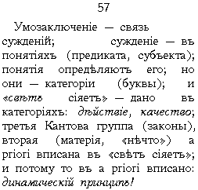
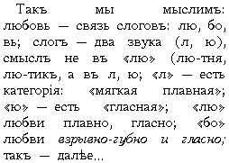
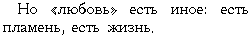

Glossolalia (Section 57)
GLOSSOLALIA

A conclusion in the mind is -- a connection of judgements; a judgement rests upon -- concepts (of the predicate, of the subject); concepts determine it; but they are -- categories (letters); and the "light is shining" is -- given in categories: action, quality; the third group of Kant (laws), the second (matter, "something") is a priori inscribed in "the light is shining"; and therefore in the a priori is inscribed: a dynamic principle!

This is the way we think: love is -- the connection of sounds: lo, ve; the word has -- two sounds (lo) the meaning is not in the "lo" (lo-vage, lo-zenge), but in l, o; "l" is -- a category: "soft liquid"; "o" is -- a "vowel"; "lo" is liquidy, voiced; the "ve" of love is labial-dental voiced fricative; and so -- forth...

But "love" is something else: it is a flame, it is life.